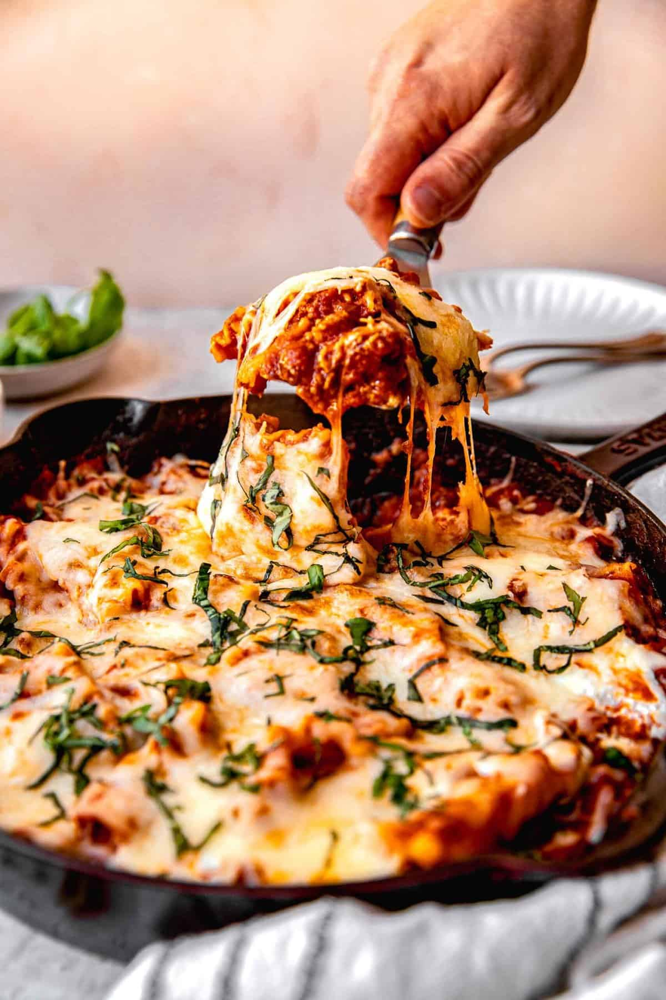

Lasagna

Lasagna is a comforting and hearty Italian dish made up of layers of wide pasta sheets, rich meat or vegetable sauce, creamy béchamel sauce (or ricotta), and plenty of melted cheese. It’s a crowd-pleasing favorite, often served at family gatherings and special occasions. The layers meld together beautifully, with the perfect balance of savory meat, creamy cheese, and tender pasta. It's a dish that becomes even more flavorful after a day or two, making leftovers just as delicious!
ingredients for 4 px
For the Meat Sauce (Ragù):
- 400g (14 oz) ground beef (or a mix of beef and pork)
- 1 medium onion (chopped)
- 2 cloves garlic (minced)
- 1 carrot (finely chopped)
- 1 celery stalk (finely chopped)
- 1 can (400g/14 oz) crushed tomatoes
- 2 tbsp tomato paste
- 1 tsp dried oregano
- 1 tsp dried basil
- 1 tsp sugar (to balance acidity)
- Salt and pepper (to taste)
- 2 tbsp olive oil
- 100ml (½ cup) red wine (optional)
- 200ml (¾ cup) beef or vegetable stock (or water)
for the bechamel sauce
- 50g (¼ cup) unsalted butter
- 50g (¼ cup) all-purpose flour
- 500ml (2 cups) whole milk
- 1 tsp ground nutmeg (optional)
- Salt and pepper (to taste)
For the Lasagna
- 12-14 lasagna noodles (about 250g/9 oz, cooked or no-boil, depending on preference)
- 200g (7 oz) mozzarella cheese (grated)
- 100g (3.5 oz) Parmesan cheese (grated)
Process:
- Make the Meat Sauce (Ragù):
- Heat 2 tablespoons of olive oil in a large pan over medium heat. Add the chopped onion, garlic, carrot, and celery, and sauté until softened (about 5-7 minutes).
- Add the ground meat and cook, breaking it up with a spoon until browned (about 8 minutes).
- Stir in the tomato paste and cook for 1-2 minutes to deepen the flavor.
- Pour in the red wine (if using) and let it simmer for 2-3 minutes, allowing the alcohol to evaporate.
- Add the crushed tomatoes, stock (or water), oregano, basil, sugar, salt, and pepper. Bring to a simmer, then lower the heat and cook for about 30 minutes, stirring occasionally, until the sauce thickens and the flavors meld.
- Make the Bechamel Sauce
- In a medium saucepan, melt the butter over medium heat. Once melted, whisk in the flour and cook for 1-2 minutes, stirring constantly, to form a roux (a thickening base).
- Slowly add the milk while whisking to avoid lumps. Keep whisking until the sauce thickens and comes to a simmer (about 5 minutes).
- Season with salt, pepper, and nutmeg (if using). Once thickened to a creamy consistency, remove from heat and set aside.
- Prepare the Lasagna Noodles
- If you're using regular lasagna noodles, cook them according to the package instructions, drain, and lay them flat on a sheet of parchment paper to prevent sticking.
- If using no-boil lasagna noodles, you can skip this step as they will cook in the sauce during baking.
- Asamble the Lasagna
- Preheat the oven to 180°C (350°F).
- In a baking dish (about 9x13 inches), spread a thin layer of meat sauce on the bottom.
- Place a layer of lasagna noodles over the sauce.
- Spread a layer of béchamel sauce over the noodles, followed by a generous layer of meat sauce.
- Sprinkle a little grated mozzarella and Parmesan cheese over the meat sauce.
- Repeat the layers (noodles, béchamel, meat sauce, cheese) until all ingredients are used, finishing with a top layer of meat sauce and a generous amount of mozzarella and Parmesan cheese.
- Bake the Lasagna
- Cover the lasagna with aluminum foil (to prevent the cheese from burning) and bake for 25-30 minutes.
- Remove the foil and bake for an additional 10-15 minutes, until the top is golden and bubbling.
- Let the lasagna rest for 10 minutes before serving. This will help it set and make slicing easier.
Serve
Cut into generous portions, garnish with extra Parmesan cheese if desired, and serve with a side of garlic bread or a green salad. Enjoy the rich layers of flavor in every bite!
More Recipes